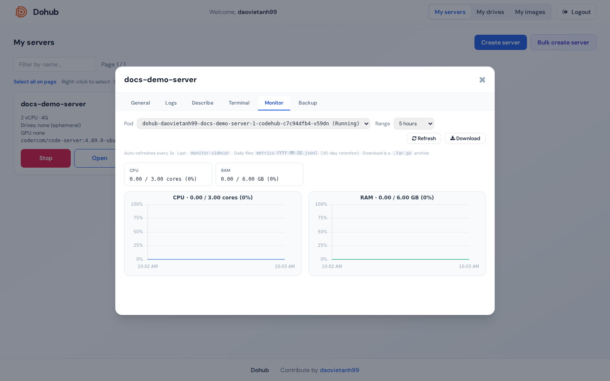

Sidecar monitor ghi metrics định kỳ (kubectl top, nvidia-smi) và hiển thị biểu đồ trên UI.

Điều kiện
- Server đang chạy với monitor sidecar (bật khi spawn).
- Cluster có metrics-server.
Điều khiển
- Pod — chọn pod.
- Range — 5 min, 15 min, 30 min, 1 hour, 5 hours.
- Refresh / Download — tải JSONL log metrics.
Thẻ tóm tắt: CPU, RAM, GPU, GPU memory.